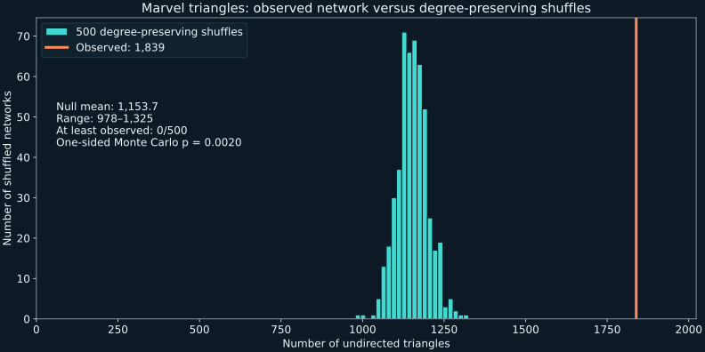

Week 02 · Models & null models · Go Nuts
Triangles beyond
the hubs.
Does the Marvel Wikipedia network have more triangles than expected given how many connections each character has?
Keep every character’s degree. Shuffle who connects to whom. Count what survives.
Read the evidence ↓01 · Why this question?
Popularity is not the whole pattern.
A triangle is a group of three distinct character pages with an undirected link between every pair. Hubs create many opportunities for triangles, so comparing with a random graph that loses the hubs would answer the wrong question. Our null keeps the exact number of neighbours of each character. We ask whether the arrangement of those connections contains additional triangle structure.
02 · The measured result
The real count sits beyond every shuffle.

| Measurement | Result |
|---|---|
| Observed | 1,839 |
| Shuffle mean ± sample SD | 1,153.66 ± 46.82 |
| Shuffle minimum–maximum | 978–1,325 |
| Shuffles at least as large as observed | 0 / 500 |
| One-sided Monte Carlo p, (1 + exceedances) / (1 + 500) | 0.001996 |
| Standardized distance, (observed − mean) / SD | 14.64 SD |
Finding: the real network contains 1.59 times the shuffled mean triangle count. The degree sequence alone does not explain this many triangles under our shuffle baseline. This is evidence of additional organization in the links, not proof that characters are friends or that any particular mechanism caused the pattern.
The p-value is a finite-simulation estimate, not zero and not the probability that the null is true. The standardized distance is descriptive; we do not convert it into a normal-tail probability.
03 · Source and graph construction
All characters, one simple graph.
We use the official frozen course data: node file and edge file. The snapshot contains 303 Marvel Wikipedia character articles and 1,784 directed article-text links. Redirects were resolved in the course crawl; shared navigation-template links were excluded. These are editorial hyperlinks, not canonical social relationships.
- Add all 303 node IDs first, preserving the 17 characters without links.
- For each directed A → B, add the unordered pair A–B if A ≠ B. Either direction is sufficient; reciprocal links become one edge. We ignore direction and link frequency.
- The resulting unweighted simple graph has 1,434 edges. No self-loops were present. We keep the whole graph rather than only its giant component.
- Count triangles once each: sum the per-node triangle counts and divide by three. An independent common-neighbour calculation agrees.
Input SHA-256 hashes, software versions and every character’s degree are recorded in results.json. The script rejects changed input hashes.
04 · The null model
Change partners, preserve degrees.
Each run starts from a fresh copy of the observed graph. NetworkX double_edge_swap performs 28,680 successful swaps (20 × 1,434 edges), with distinct integer seeds 20261123–20261622. A swap exchanges edge endpoints while rejecting invalid moves that would create self-loops or duplicate edges. We use 500 runs and an upper-tail test because our question asks about an excess.
After every run, the script compares the full character-to-degree dictionary with the original, not just a sorted degree sequence. Node IDs, edge count, simplicity and the exact isolate set are checked too. All 600 runs, including the sensitivity ensemble, passed. The null does not constrain communities, components, in/out-degrees or reciprocity.
Does more shuffling change the conclusion?
We also ran 100 separately seeded copies with 143,400 swaps each (100 × edges; seeds 30261123–30261222). Their mean was 1,146.74, SD 42.89, range 1,044–1,268; 0 reached the observed count. The conclusion survives this longer-run check. Similar summaries are a practical mixing check, not a proof of uniform sampling or convergence.
05 · Limits and reproducibility
What this test cannot tell us.
The undirected projection discards who linked to whom and whether links were reciprocal. We test triangle structure in one editorial snapshot with fixed undirected degrees; we cannot infer character friendships, editorial intent or a causal story. Finite edge-swap chains only approximate the intended null ensemble.
This post follows exercise 2.11 and its shuffle-test idea. AI assisted the code, checks and explanation. Measurements come from executed code; no student review or Teams submission is claimed. See AI-use checks.
python3 -m venv .venv-week2
source .venv-week2/bin/activate
pip install -r scripts/requirements-week2.txt
python scripts/analyse_week2.py
python -m http.server 8000Run from the repository root. Open /weeks/week2/. Analysis code · Full results · Run instructions